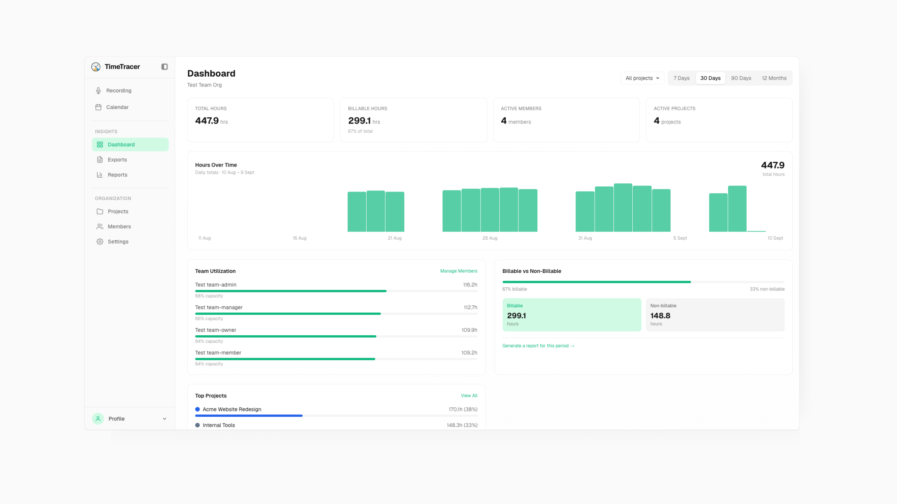

Turning a foreman's spoken workday into an audit-ready, manager-facing report
Construction crews log hours on paper, on a clipboard, on a job site. That paper trail is slow, error-prone, and painful for the super (the manager) to convert into invoice-ready reports.
TimeTracer is a voice-first app to solve that. A crew member logs their day from the truck, gloves still on, in about 30 seconds. That log becomes a structured, exportable timesheet.
As the only designer on the team, I owned the two surfaces that turn raw field entries into something a general contractor or auditor will accept: Reports and Calendar, plus the capture flow leading to them.
Logged from my own weekly timesheets — the actual build sequence, not a reconstructed narrative.
#1 Voice Capture, Translated
Voice-based project creation, built for someone standing on a job site, not sitting at a desk. Added a language switcher, then extended translation across Reports, Materials, and Tools, so non-English-speaking crews (a real presence on almost every job site) don't need a supervisor to translate for them. The tools and materials they used will automatically be synced to their recording and added to the report.
#3 Reports: Scope, Period, Export
Turned a single "export CSV" button into a real report builder: custom date ranges, multi-select scope across sites and crew members, and batch export so a contractor can push invoices for every crew, every site, in one pass. Also fixed hour-rounding and sync bugs that were quietly turning into paycheck disputes.
#5 The Org Dashboard — Weeks 4, 7–8
The first screen an owner running multiple crews and sites opens: total hours, billable split, active members and projects, and a daily trend. Paired with site/crew filters that drive every other view in the app.

At first, I wasn't a designer feeding a backlog. I was in the backlog. Weekly 1:1s with the founders set direction; day to day I sat with the two engineers on tickets, PRs, and test coverage.
Approved and tested teammates' PRs against the live UI, ran end-to-end and unit tests before sign-off, and resolved my own Linear tickets rather than filing them and moving on.
Built a dedicated QA account and walked full journey flows on timetracer-staging before each feature shipped, catching sync and rounding bugs before they reached a client's invoice.
Drafted and shipped a full workflow document defining the team-owner plan flow, used to brief engineering and align the founders before a single screen was built.
Ran a design-system audit and pulled real complaints from Reddit and app-store reviews to prioritize which reporting bugs actually cost the product trust.
TimeTracer runs one codebase across two very different users — a solo tradesperson working alone and a general contractor running multiple crews across multiple job sites — with permissions enforced at the database layer. Every screen had to hold up in both modes without forking the UI. Translation had to reach every surface a report touches, not just the obvious ones, and OCR on scanned client templates never quite reaches 100% on a coffee-stained, handwritten paper timesheet, so the upload flow needed a graceful correction path, not a silent failure.
Being the only designer meant every decision was mine to defend, in the PR and in the 1:1.There was no one else to hand ambiguity to.
A report that's 98% right is a report nobody uses. I learned to design for the edge case first, not the happy path.
Shipping fast only worked because testing was part of the design process, not a separate step after it.